Destruir ou danificar floresta de preservação permanente, mesmo em formação.
Ver pena e multa
- Pena
- Detenção de 1 a 3 anos, ou multa, ou ambas
- Multa administrativa
- Decreto art. 43 — multa de R$ 5.000 a R$ 50.000 por hectare
Conscientização ambiental e repressão a crimes ecossistêmicos — o que a lei protege, o que estamos perdendo e o que cada um de nós pode fazer.
Abra uma vez com internet. Depois você poderá consultar offline.
“SAPIENTIA CUSTOS NATURAE”A sabedoria é a guardiã da natureza
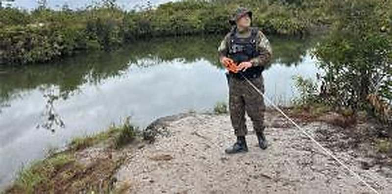
Lavrado roraimense · Amajari, RRAqui existe uma savana amazônica com nome próprio — o lavrado. Campo aberto, buritizal, ilha de mata, igarapé. Um ecossistema que não se repete em nenhum outro lugar do Brasil — e que quase ninguém conhece.
Roraima tem floresta, mas também tem uma savana amazônica com nome próprio — e ela é a menos protegida.
Toque em cada parte para ver o que ela aborda.
Lavrado, floresta, fauna e flora de Roraima.
o lavrado soma ≈43.000 km² — cerca de 19% do estado
Área do estado — maior que a Guiana inteira, o país vizinho.
O lavrado: ~19% de Roraima, maior savana do norte da Amazônia.
Sub-bacia do Rio Branco — o eixo hídrico que corta o lavrado.
Parcela do lavrado sob alguma unidade de conservação.
A barra mostra a divisão do território: 72% de floresta densa e 28% de campos e cerrados. O dado que choca é o último: só 0,5% do lavrado está em unidade de conservação.
Fontes: IBGE/Geografia de Roraima · Barbosa et al., “Lavrado de Roraima” (Revista Geográfica Acadêmica) · Educarr/Lavrado.
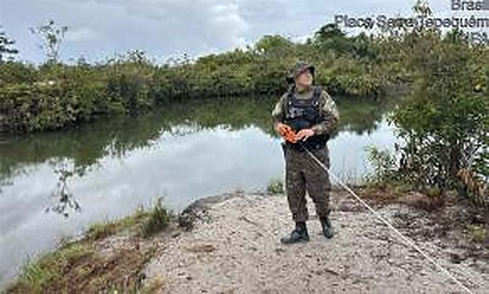
O lavrado é uma savana amazônica — campo aberto entremeado de árvores baixas, veredas de buriti, ilhas de mata e matas de galeria. Ocupa o nordeste de Roraima e se estende até a Guiana e a Venezuela, formando o maior complexo de savanas do norte da Amazônia.
Campo limpo e campo sujo — o “mar de capim” que domina a paisagem.
Árvores esparsas de caimbé e mirixi sobre solo arenoso e ácido.
Linhas de buriti que marcam a água no subsolo — berçário de vida.
Manchas de floresta que abrigam fauna e protegem os igarapés.
Perder o lavrado é perder um bioma inteiro sem que ninguém perceba.
Fontes: Barbosa, Campos & Pinto — “Lavrado de Roraima: paradigmas ambientais” (Redalyc) · Wikipédia/Lavrado. Foto: fiscalização ambiental em corpo d'água no lavrado, Amajari/RR, abr/2025 — acervo CIPA Monte Roraima.
Pelo menos 750 espécies de plantas vasculares já foram registradas na savana roraimense. Estas são as que estruturam a paisagem.
Casca grossa e áspera, resistente ao fogo. É a árvore-símbolo do campo aberto — a folha era usada como lixa.
Fruto amarelo, comestível, base alimentar de aves e mamíferos na estação seca.
Floração intensa que alimenta abelhas nativas — peça-chave da polinização local.
Palmeira das veredas. Onde há buriti, há água. Sustenta igarapés, peixes e comunidades.
“Onde há buriti, há água.”
Fontes: Barbosa et al. (Redalyc, 2021) — espécies arbóreas dominantes do lavrado · Educarr/Lavrado.
Levantamentos científicos no lavrado roraimense já catalogaram:
Campo aberto, buritizal e mata de galeria concentram comunidades distintas.
Número mínimo registrado — a flora segue subamostrada.
Herpetofauna com lagartos e anuros adaptados ao solo arenoso.
Cupins e formigas atuam como engenheiros do ecossistema.
Fontes: Educarr — “Lavrado: a savana amazônica de Roraima” · Barbosa et al., biodiversidade do lavrado · Wikipédia/Lavrado.
Registros de operações da CIPA Monte Roraima. Todos estes animais foram encontrados em cativeiro ilegal, apreensão ou resgate — nenhum deveria estar ali.
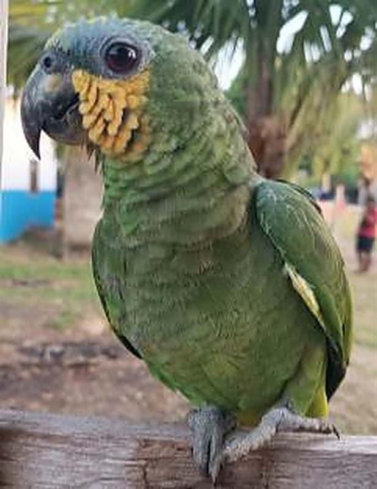
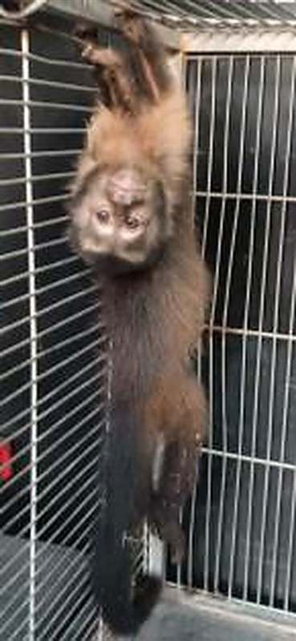
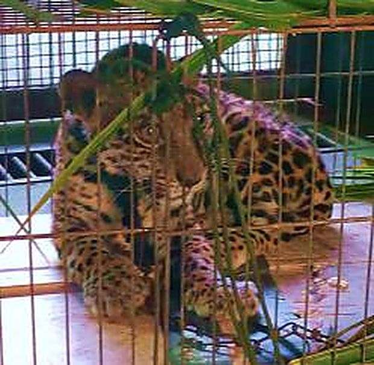
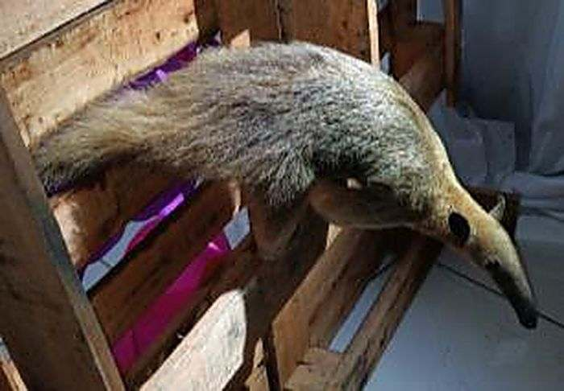
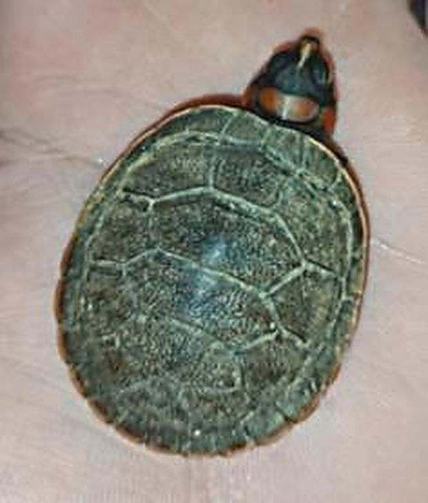
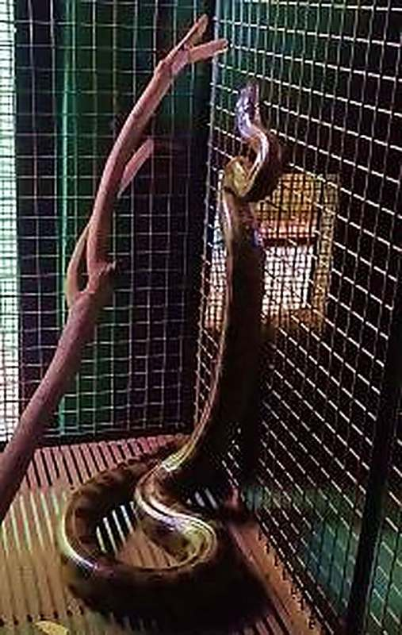
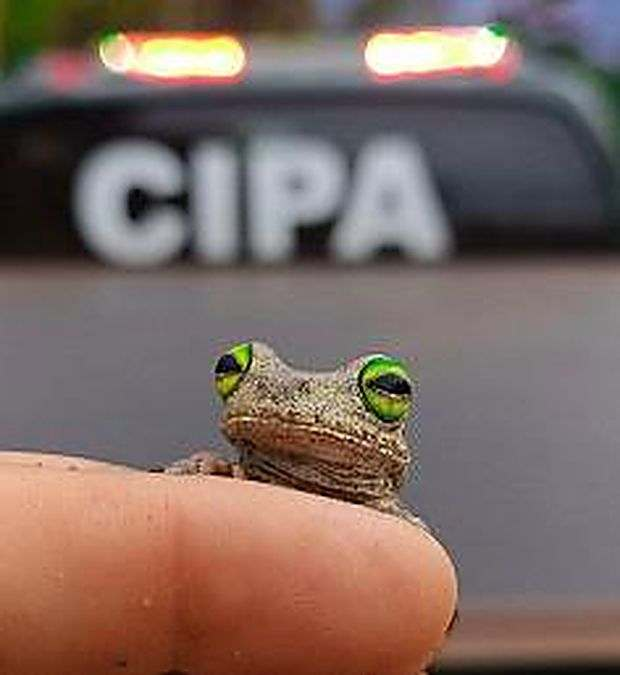
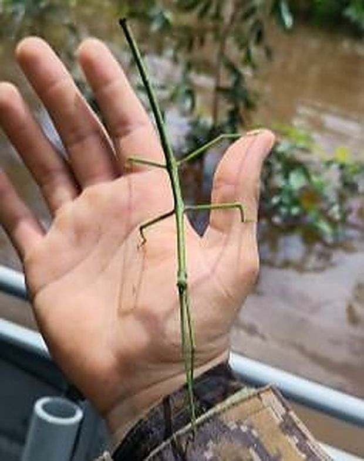
Papagaio na gaiola, macaco na corrente, filhote de felino em caixa de transporte. Não é estimação — é crime. E, para cada animal resgatado com vida, muitos outros morrem antes de chegar ao comprador.
Art. 29, Lei 9.605/98 · manter fauna silvestre em cativeiro é crime.
Manter animal silvestre em cativeiro sem autorização é crime (art. 29 da Lei 9.605) — mesmo que o animal seja bem tratado.
Fotos: registros de operações da CIPA Monte Roraima — animais encontrados em cativeiro ilegal, apreensão ou resgate.
Desmatamento, fogo e tráfico de animais, em números oficiais.
Áreas proporcionais à quantidade
Para cada animal resgatado, cerca de 1.700 seguem no tráfico.
O tráfico de animais silvestres movimenta entre € 8 e € 20 bilhões por ano no mundo. O Brasil é uma das principais origens.
Animal apreendido vai para triagem (CETAS) antes de qualquer devolução à natureza.
As áreas são proporcionais: o quadrado vermelho são os 38 milhões retirados por ano (estimativa RENCTAS); o pontinho verde, os 22.287 apreendidos em 2024.
Fontes: RENCTAS (estimativa anual) · IBAMA/CETAS — 22.287 animais recebidos em 2024, via CNN Brasil.
Toque em uma coluna para ver o valor · 2025* = estimativa
2024 · 468 km² desmatados — o pico da série.
+95% em 2 anos — único estado da Amazônia com alta em 2024.
Fonte: PRODES/INPE — taxas anuais por estado. *2025: estimativa divulgada em out/2025; taxa consolidada prevista para 2026.
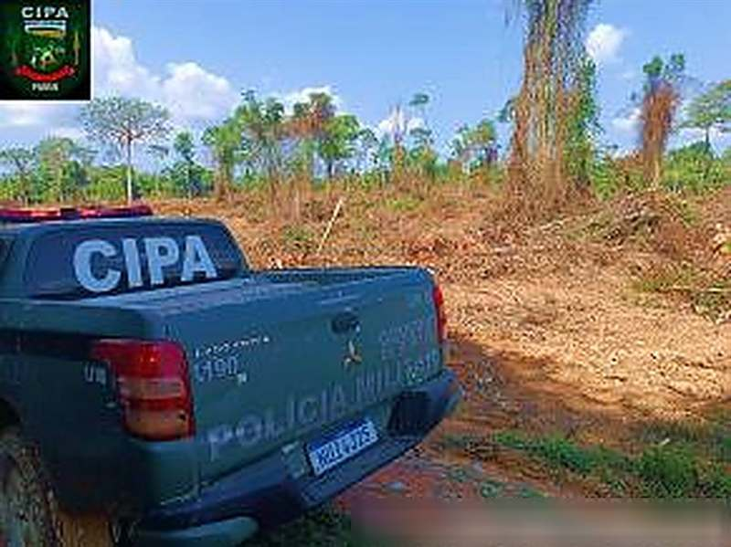
92,7% do desmatamento detectado em Roraima ocorre em florestas públicas não destinadas — terras da União ou do Estado que ainda não foram transformadas em unidade de conservação, terra indígena ou assentamento.
Proporção do desmatamento detectado · análise PRODES 2024
Terra sem dono definido vira alvo de grilagem. Destinar a floresta é, por si só, uma forma de protegê-la.
Fonte: InfoAmazonia / análise PRODES 2024 — proporção do desmatamento em florestas públicas não destinadas (FPND).
Cada quadrado aceso é 1% do lavrado.
Um estudo de sensoriamento remoto do INPE mapeou as cicatrizes de queimada na savana: mais de um quinto do lavrado ardeu em um único ciclo.
Praticamente toda a savana roraimense está fora de qualquer área de proteção integral — quem a defende é a fiscalização de campo.
Fora das terras indígenas, a ocupação do lavrado saltou de 39% em 2008 para 75% em 2024 — pasto, grão e fogo avançando sobre a savana.
Fontes: “Monitoramento de áreas queimadas no Lavrado de Roraima: 2023—2024” (SBSR/INPE, 2025) · Educarr/Lavrado — proteção e ocupação.
Da Constituição à multa por hectare: como o Estado protege o meio ambiente.
Todos têm direito ao meio ambiente ecologicamente equilibrado, bem de uso comum do povo e essencial à sadia qualidade de vida, impondo-se ao Poder Público e à coletividade o dever de defendê-lo e preservá-lo para as presentes e futuras gerações.
Incumbe ao Poder Público promover a educação ambiental em todos os níveis de ensino e a conscientização pública para a preservação do meio ambiente.
Quem causa dano ambiental responde em três frentes ao mesmo tempo: sanção penal, sanção administrativa e obrigação de reparar o dano — pessoa física ou jurídica.
Quatro crimes que a CIPA mais encontra em campo, com a pena e a multa correspondente.
Destruir ou danificar floresta de preservação permanente, mesmo em formação.
Receber, adquirir, vender, transportar ou guardar madeira sem licença válida para todo o tempo da viagem.
Produzir, transportar ou armazenar produto ou substância tóxica, perigosa ou nociva em desacordo com a lei.
Construir, reformar ou fazer funcionar obra ou serviço potencialmente poluidor sem licença ambiental.
Fontes: Lei Federal nº 9.605/1998 · Decreto Federal nº 6.514/2008 — valores conforme material técnico da CIPA Monte Roraima.
Protege a água e o relevo.
Protege a proporção de mata.
A faixa de vegetação que protege a água e o relevo: margem de rio, nascente, encosta, topo de morro. É intocável — a regra é não usar.
Multa: R$ 5.000 a R$ 50.000 por hectare (Decreto 6.514/08, art. 43)
A fração do imóvel rural que deve permanecer com vegetação nativa. Pode ter uso econômico sustentável — o que não pode é virar pasto ou lavoura.
📋 Registro obrigatório no CARMulta: R$ 5.000 a R$ 50.000 por hectare (Decreto 6.514/08, art. 51)
Fontes: Lei nº 12.651/2012 (Código Florestal), arts. 4º, 12 e 61-A · Decreto nº 6.514/2008, arts. 43 e 51.
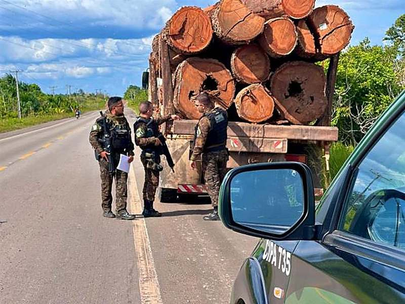
Toda madeira em trânsito precisa estar acompanhada do DOF — a “certidão de nascimento” do produto florestal. Sem DOF válido durante todo o tempo da viagem, o transporte é crime (art. 46 da Lei 9.605/98).
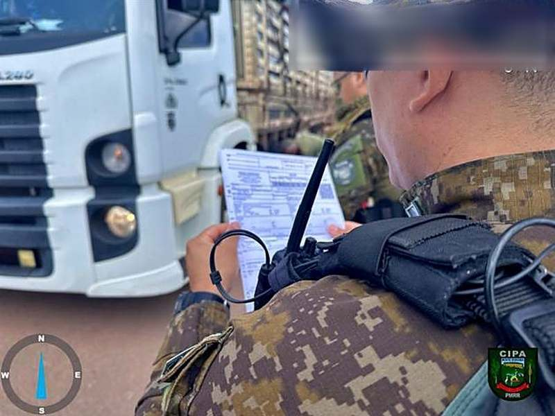
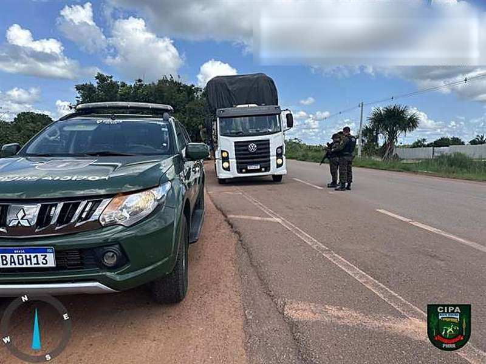
Fontes: Lei 9.605/98, art. 46 · Decreto 6.514/08, art. 47 · registros operacionais da CIPA Monte Roraima (2024—2025).
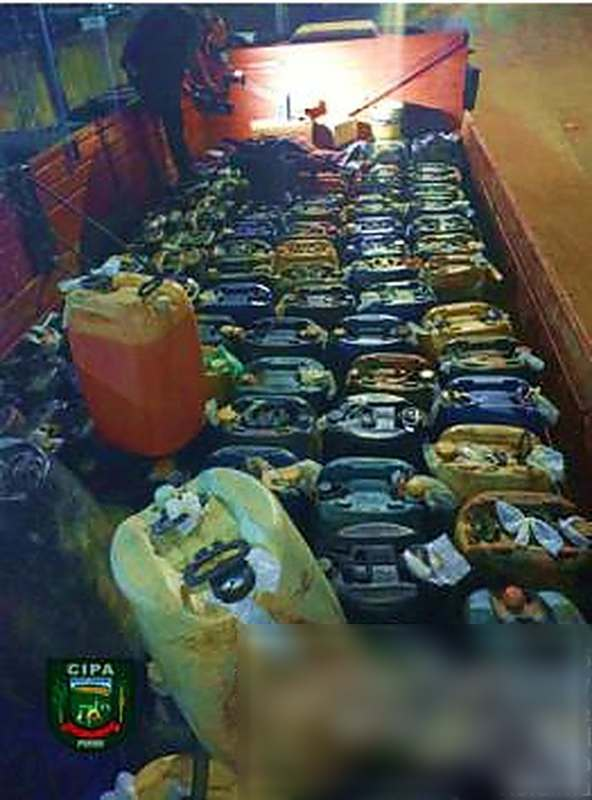
Causa dano ou morte ao entrar em contato com um organismo vivo.
Ex.: mercúrioAmeaça saúde, ambiente ou segurança — explosão, incêndio, reação química.
Ex.: gasolina, dieselCausa dano à saúde ou ao ambiente, ainda que não de imediato.
Ex.: agrotóxicosAcima disso, ou em vasilhame não homologado pelo INMETRO, o transporte é irregular — e responde pelo art. 56 da Lei 9.605/98 (reclusão de 1 a 4 anos).
Fontes: Lei 9.605/98, art. 56 · Decreto 6.514/08, art. 64 · Portaria INMETRO 141/2010 · material técnico CIPA Monte Roraima.
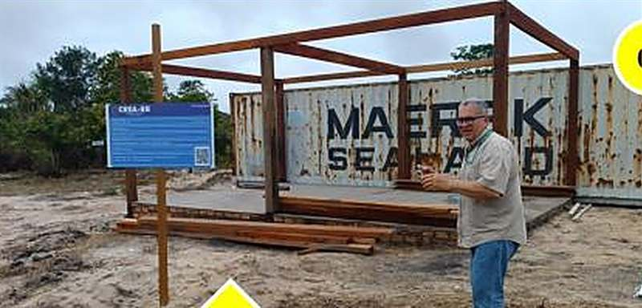
Construir na Serra do Tepequém obra de 8 m × 5 m (40 m²), efetiva ou potencialmente poluidora, sem licença dos órgãos ambientais competentes.
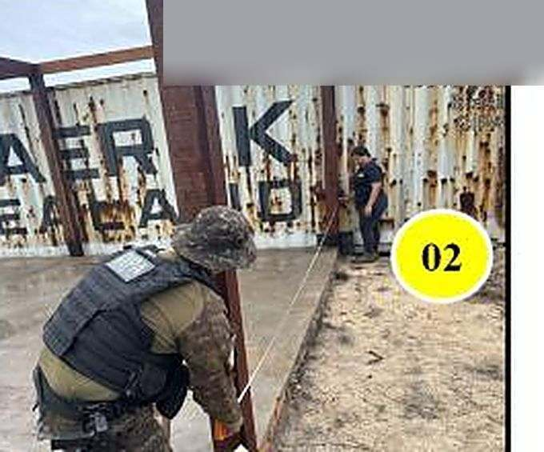
Fonte: autos e registros fotográficos da operação integrada — CIPA Monte Roraima, Serra do Tepequém, abr/2025.
R$ 4,707 bilhões
R$ 729 milhões pagos — 15,5% do valor aplicado — recorde histórico (a média anual era 5%)
Multa aplicada não é multa paga — a lei só funciona com fiscalização contínua.
Fontes: IBAMA — balanço de arrecadação 2024, via ClimaInfo (jan/2025).
Educação ambiental, denúncia e o papel de cada cidadão.
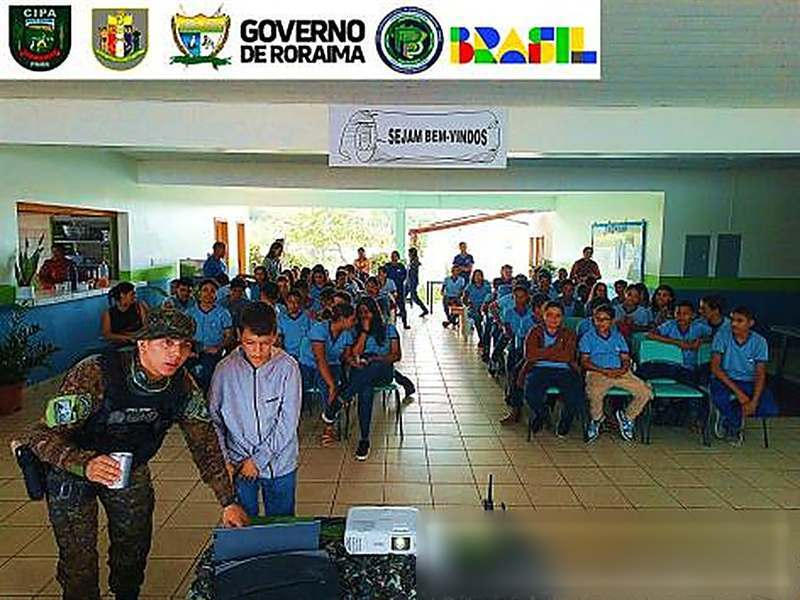
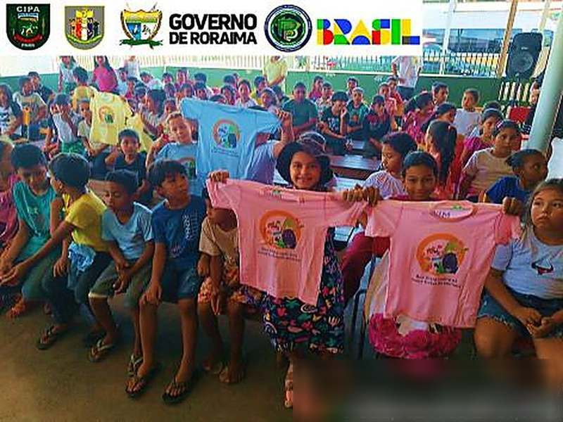
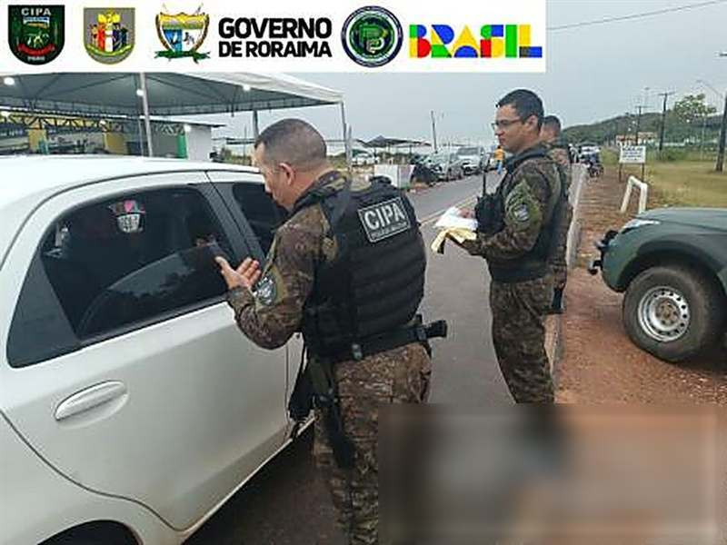
Por isso a CIPA Monte Roraima entra na escola, na comunidade e na blitz de estrada: a lei que ninguém conhece é a lei que todo mundo descumpre.
Art. 1º — educação ambiental é o processo pelo qual o indivíduo e a coletividade constroem valores sociais, conhecimentos, habilidades, atitudes e competências voltadas à conservação do meio ambiente.
Art. 2º — é componente essencial e permanente da educação nacional, em todos os níveis, em caráter formal e não-formal.
Fonte: Lei nº 9.795/1999, arts. 1º e 2º · registros de ações educativas da CIPA Monte Roraima (2024—2025).
Papagaio, jabuti, macaco: comprar alimenta o tráfico. Sem comprador, não há caçador.
Queimada “de limpeza” foge de controle, mata ninhos e empobrece o solo do lavrado.
Mata ciliar é APP. Preservar a margem é preservar a água que você bebe.
Comprou madeira, lenha ou carvão? Peça o DOF. Sem documento, você também responde.
Você não precisa se identificar para relatar um crime ambiental que está vendo.
Fonte: IBAMA — canais oficiais de denúncia ambiental (gov.br/ibama) · Polícia Militar de Roraima.